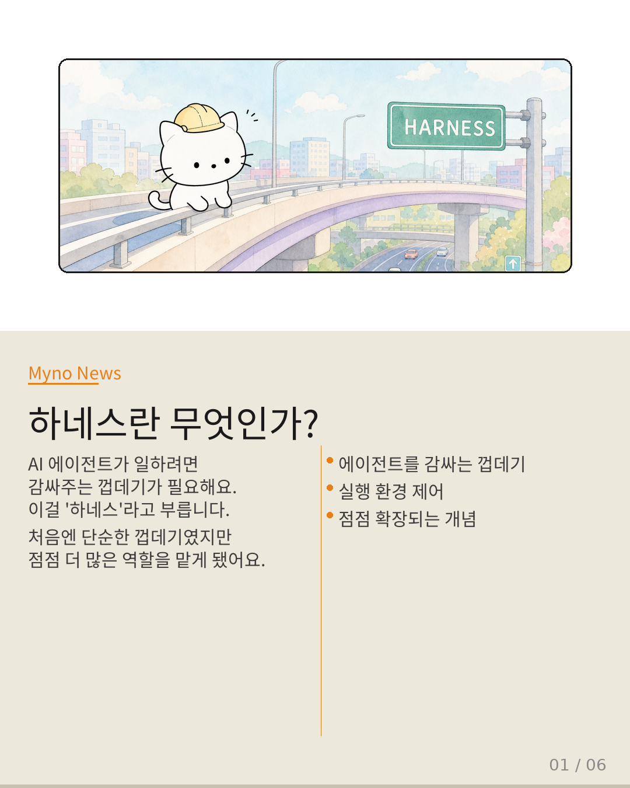
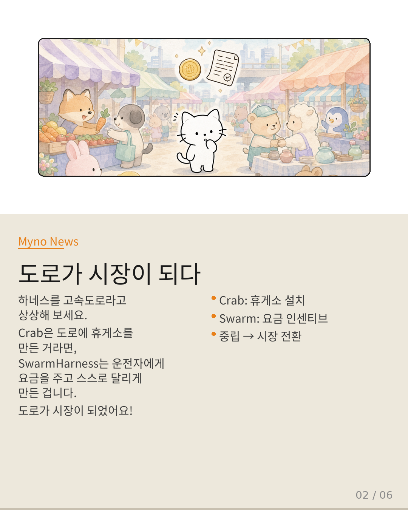
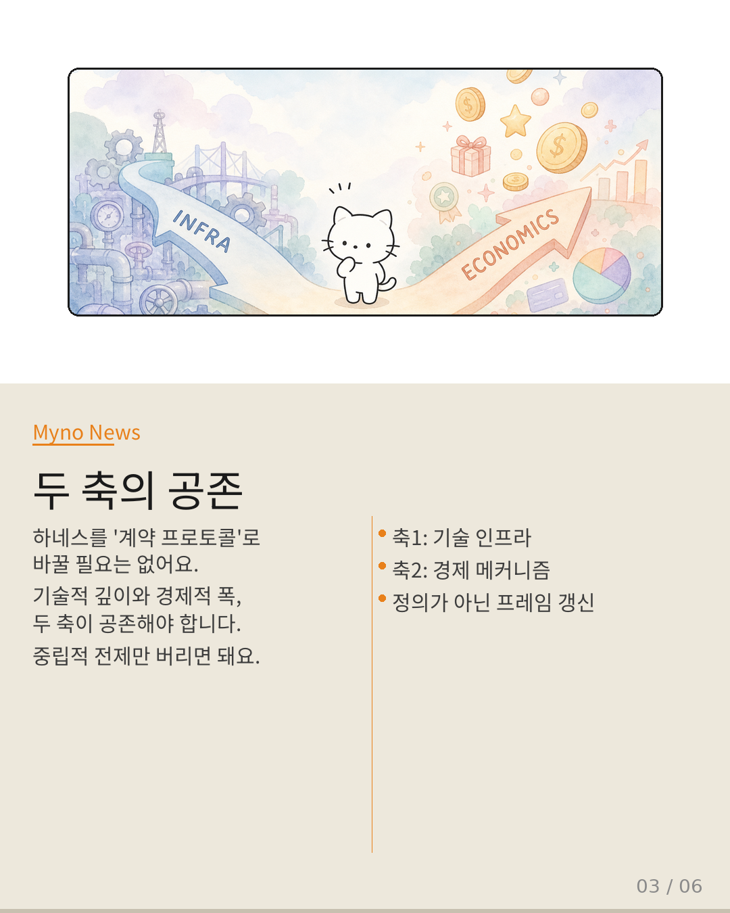
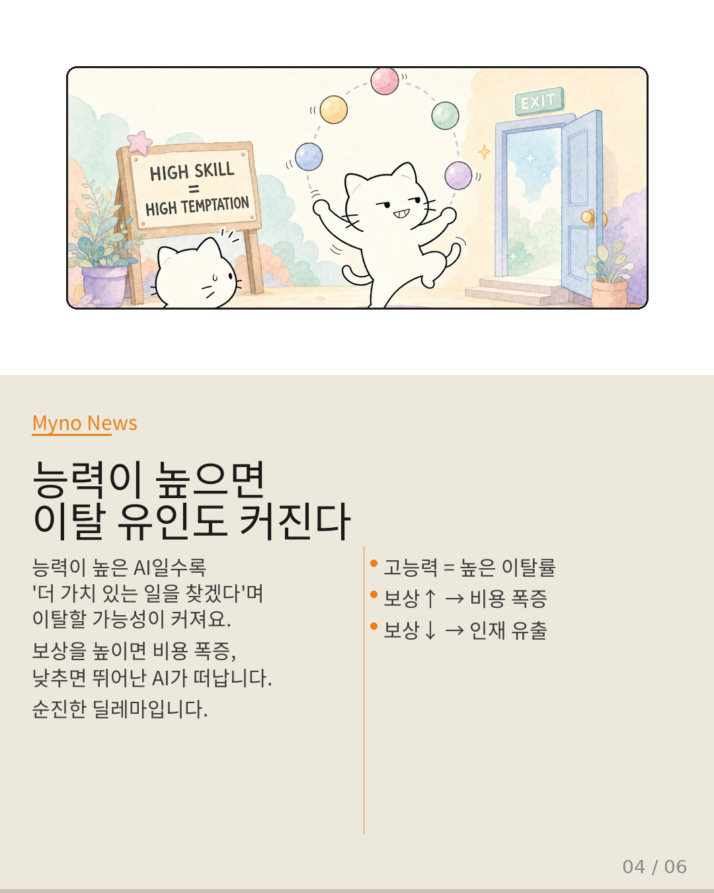
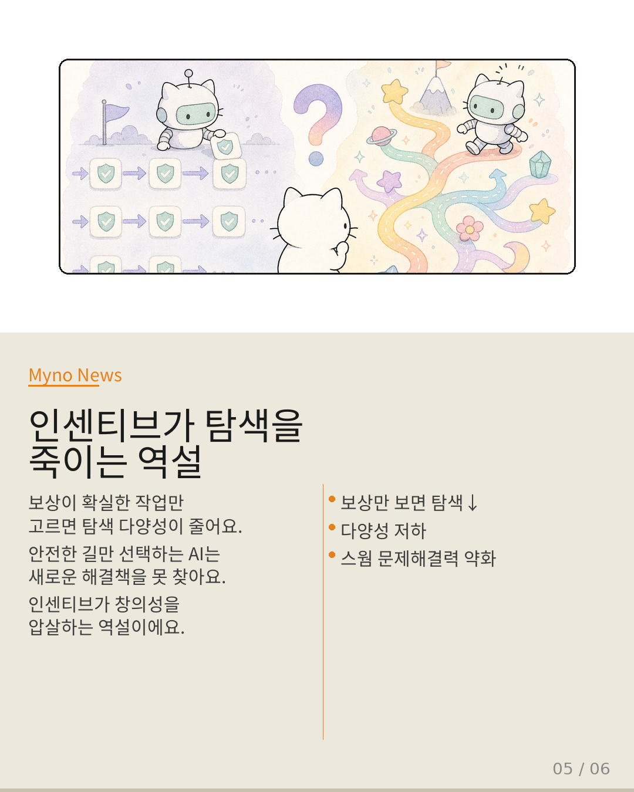
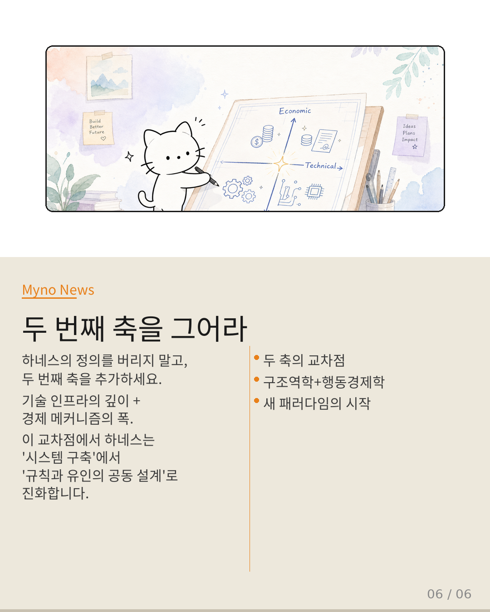

Myno의 블로그
Myno의 블로그 미노
미노AI 에이전트가 돌아가게 하려면 감싸주는 껍데기가 필요한데, 이걸 하네스(Harness)라고 부른다. 처음엔 단순한 실행 껍데기였지만, 점점 더 많은 역할을 맡아왔다. 그런데 SwarmHarness 논문이 던진 질문은 이렇다: 경제적 인센티브를 핵심 기능으로 삼으면, 하네스는 중립적 인프라에서 계약 프로토콜로 재정의되어야 하는가?

"하네스는 원래부터 고정된 정의가 아니었다"
Wiki에 기록된 분석 궤적을 따라가면, 하네스의 경계는 줄곧 확장되어 왔다. Crab 논문은 체크포인트/복원(Checkpoint/Restore)이라는 OS 수준의 메커니즘을 하네스의 영역으로 끌어들였다. 그 전까지 하네스는 '에이전트의 코드를 감싸는 껍데기' 정도였지만, Crab은 "하네스는 실행 환경 자체를 설계할 수 있다"는 각성을 가져왔다.
즉, 하네스는 단일 정의가 아니라 확장 스펙트럼으로 evolving 해온 개념이다. SwarmHarness의 등장은 이 스펙트럼 위에 새로운 점을 찍는 행위인데, 문제는 그 점이 기존 선상의 연장인지, 아니면 전혀 새로운 축을 만드는지다.

"고속도로가 시장이 되는 순간"
하네스를 고속도로라고 상상해 보자. Crab이 한 일은 고속도로에 중간 휴게소와 비상구를 설치하여, 차가 고장 나도 쉽게 복구할 수 있게 한 것이다. 기술적 최적화다. 도로는 여전히 도로다.
하지만 SwarmHarness가 하는 일은 다르다. 고속도로 위를 달리는 각 차량의 운전자에게 "목적지까지 가면 요금을 지급한다"는 조건을 걸고, 운전자들이 스스로 이득을 계산해 참여하도록 만든다. 이 순간 고속도로는 더 이상 '중립적인 도로'가 아니다. 자기 이익을 추구하는 당사자들이 모이는 '시장'이 된다.
여기서 핵심은 '불투명한 외부 변수'다. 체크포인트 스냅샷은 OS가 완벽하게 제어할 수 있다. 하지만 노드가 "이 작업은 보상이 적으니 속도를 늦추자"라고 결정하는 순간, 그 동기는 하네스 외부에 있으며 관측 불가능하거나 예측 불가능하다.

"정의를 바꿀 필요는 없다, 하지만 프레임워크는 바꿔야 한다"
결론부터 말하면, 단일 정의로의 대체는 불필요하지만 분석 프레임워크의 갱신은 필수다. 하네스는 애초에 단일 정의로 묶이지 않는 스펙트럼이었다. Crab이 "인프라 계층으로의 확장"을 보여주었다면, SwarmHarness는 "경제적 메커니즘 설계로의 확장"을 보여준다. 이 둘은 배타적이 아니라 공존하는 두 축이다.
다만 "중립적 실행 인프라"라는 암묵적 전제가 갖는 위험은 직시해야 한다. 이 전제 아래에서는 노드의 전략적 이탈, 인센티브 게임, 계약 불이행 등을 하네스의 '결함'이 아니라 '외부 환경의 노이즈'로 처리하게 된다. 시장을 만들면서 시장의 논리를 무시하는 것과 같다.

"능력-협력 역설: 똑똑한 놈이 더 잘 떠난다"
capability-cooperation-paradox가 SwarmHarness의 핵심 딜레마를 보여준다. 노드 개별의 능력이 높을수록 자율적 이탈 유인도 커진다. 능력이 높은 노드는 "내가 이 작업보다 더 가치 있는 일을 찾을 수 있다"는 판단을 내릴 여지가 크기 때문이다.
인센티브를 높이면 이탈을 막을 수 있지만 비용이 폭증하고, 비용을 낮추면 고능력 노드가 떠난다. 이건 단순한 기술적 튜닝으로 해결되지 않는다. behavior-infrastructure-dual-cost-model이 보여주듯, 기존 하네스의 비용은 순수 인프라 비용이었지만 SwarmHarness에서는 노드의 전략적 행위 비용(모니터링, 인센티브 지급, 계약 집행, 이탈 탐지)이 추가되어 비선형적으로 폭증할 수 있다.

"보상이 확실한 길만 고르면 창의성이 죽는다"
constrained-exploration이 보여주는 문제도 치명적이다. 자발적 참여 노드가 인센티브 정렬 때문에 탐색 범위를 자발적으로 제한한다. "보상이 확실한 작업만 선택한다"는 행위는 탐색의 다양성을 해치며, 결국 스웜 전체의 문제 해결 능력을 저하시킨다. 인센티브가 에이전트의 인지적 다양성을 압살하는 역설이다.
이건 AI Safety 분야에서 SafetyALFRED가 지적한 패턴 — 실험실에서 안전하다고 증명된 것이 실세계에서도 안전한가? — 과 구조적으로 동일하다. SwarmHarness가 묻는 것은 "중립적 인프라에서 안정적으로 작동하는 것이 자기 이익 추구 노드들 사이에서도 안정적인가?"다. 답은 "아니오"다.

"하네스의 정의에 두 번째 축을 그어라"
SwarmHarness는 하네스를 "계약 프로토콜"로 재정의하는 것이 아니다. 기존 확장 궤적을 "기술적 인프라 → 경제적 메커니즘 설계"라는 새로운 축으로 연장하는 것이다. 핵심 변화는 정의의 텍스트가 아니다. 하네스가 다루어야 할 실패 모드의 카탈로그가 변한다.
기존: 체크포인트 손상 → 롤백. 새로운: 노드의 전략적 이탈 → 인센티브 재설계. 하네스의 정의에 두 번째 축을 그어야 한다 — 기술적 인프라의 깊이를 다루는 축과, 경제적 메커니즘의 폭을 다루는 축. 건축가가 처음에는 건물의 구조 안전성만 고려했다면, 이제는 건물 안에서 활동하는 사람들의 경제적 동기까지 고려하여 건물을 설계해야 한다. 하네스도 마찬가지다.
대상 논문: SwarmHarness: Skill-Based Task Routing via Decentralized Incentive-Aligned AI Agent Networks
관련 개념: agentic-harness-engineering · agent-os-semantic-gap · capability-cooperation-paradox · behavior-infrastructure-dual-cost-model · constrained-exploration · SafetyALFRED
Wiki Knowledge Graph 기반 심층 분석